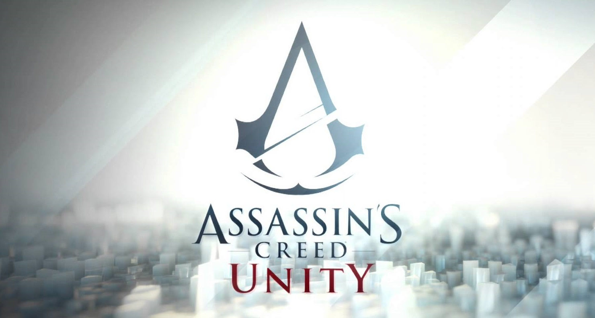

TITOLO: Assassin's Creed: Unity
SVILUPPO: Ubisoft Montreal
DATA DI USCITA: 11 novembre 2014 (PS4, Xbox One, PC)
COLLOCAMENTO STORICO: Rivoluzione francese
AMBIENTAZIONI: Parigi
TRAMA:
Nella prima parte del gioco, il giocatore impersona un dipendente dell'Abstergo Entertainment che testa la versione per il pubblico dell'Animus. Durante il test assistiamo al Sacco del Tempio di Parigi e alla cattura del Gran Maestro Templare Jacques de Molay, nel 1307. Durante il Sacco, de Molay consegna a un compagno Templare una spada e un libro, che il Templare nasconde in una cripta, prima di venire assassinato. Il ricordo avanza fino alla morte al rogo come eretico di de Molay e alla sua maledizione nei confronti di Filippo il Bello e papa Clemente V.
A questo punto la Confraternita degli Assassini si inserisce nel ricordo e ci chiede di unirsi a loro come iniziato facendoci vedere un video interno della Abstergo in cui viene descritta la cattura di un Saggio da parte della società. Si scopre così che il Saggio contiene il DNA dei Precursori, a tripla elica, e che il Progetto Fenice della Abstergo è vicina a decifrare tale genoma. Ci viene dato accesso a un altro segmento di memoria e ci viene chiesto di cercare la tomba di un Saggio, il cui corpo vogliono recuperare.
Entriamo quindi nei ricordi di Arno Victor Dorian. Arno è un bambino che si reca nella reggia di Versailles col padre, il nobile Charles Dorian. Qui incontra Élise, figlia di un Gran Maestro Templare: François De la Serre. Il padre di Arno viene assassinato a palazzo(per mano di Shay Patrick Cormac) e il signor De la Serre adotta Arno pur sapendo che il padre era un Assassino, cosa di cui Arno non è a conoscenza. La storia avanza fino all'iniziazione come Templare di Élise, all'età di 16 anni. Arno riceve un messaggio da consegnare a De la Serre, che è con Élise alla festa per l'iniziazione, ma non rispetta l'ordine e lo infila sotto la porta del padre adottivo. Arno si intrufola così alla festa. Qui incontra Élise e i due si baciano di nascosto ma il ragazzo, non invitato, è costretto a scappare dalle guardie. Nella fuga assiste all'omicidio di François De la Serre. Arno cerca di intervenire e aiutare l'uomo, ma viene ingiustamente accusato di omicidio, catturato e imprigionato nella Bastiglia. Nella prigione scopre di riuscire a vedere delle scritte sulle pareti invisibili agli altri che parlano di visioni apocalittiche. Un Assassino in cella con lui, Bellec, intuisce l'identità di Arno e lo invita a entrare nella Confraternita durante la loro fuga, avvenuta durante la presa della Bastiglia. Arno torna a casa dove trova Élise che lo proclama colpevole della morte del padre per non avere consegnato il biglietto che scopriamo contenere un avvertimento del tentativo di omicidio. Gli rivela anche di essere una Templare. Arno torna a Parigi, entra nella Confraternita ed è in cerca di un'opportunità di vendetta verso i Templari che hanno assassinato De la Serre. Il primo è il Re dei Mendicanti, che assassina con l'aiuto del Marchese DeSade. Nel corso delle sue investigazioni salva François-Thomas Germain, un argentario tenuto ostaggio dal Gran Maestro Templare Lafrenière per costruire le armi segrete dei Templari. Arno uccide Lafreniere e scopre che in realtà era stato proprio questi a tentare di avvertire De la Serre. Arno scopre, continuando le sue indagini, che in realtà Germain è in effetti un Saggio e che ha ordinato lui la morte di De la Serre in quanto sta muovendo in segreto le fila dei Templari. Piccola nota: in tutta questa fase va sottolineato il fatto che le due Confraternite avevano istituito un patto di non belligeranza che De la Serre e Lafrenière tra i Templari e Mirabeau tra gli Assassini cercano di far rispettare. Capito che il piano di Germain è innescare una rivolta di massa contro il re di Francia, Arno assassina altre due figure centrali della Rivoluzione: il capitano Rouille e la mercante Marie Levesque. Arno incrocia anche il cammino di Napoleone Bonaparte, all'epoca ufficiale di artiglieria, mentre cerca delle lettere, intercorse tra il suo mentore Mirabeau e il re, che i Templari potrebbero sfruttare per rivoltare la gente contro gli Assassini. Più tardi Bonaparte lo aiuta ad arrivare a Rouilles. Durante questi avvenimenti Élise va alla Confraternita degli Assassini, tramite l'aiuto di Arno, e spiega loro dello scisma causato dal Saggio e prega per il loro aiuto. Mirabeau acconsente, sperando di trarne vantaggio, ma viene ucciso da Bellec, che intende punirlo per aver aiutato una Templare. Arno si rifiuta di unirsi a Bellec e lo uccide. Con la Rivoluzione nel suo culmine e a seguito dell'esecuzione di re Luigi XVI, nel 1793, Arno viene esiliato dalla Confraternita per non aver rispettato più volte il Credo e per aver agito di propria iniziativa. Torna a Versailles e si ubriaca finché non arriva Élise a reclamare il suo aiuto e a descrivergli il regime di terrore che si è instaurato a Parigi. Arno torna a Parigi e con l'aiuto di Élise scredita Robespierre, inviato da Germain (ora Gran Maestro dei Templari) a fomentare la gente durante la Rivoluzione. Screditato, ricercato dai gendarmi e assalito dalla folla, Robespierre scappa nel suo ufficio dove viene raggiunto da Élise e Arno. Élise gli spara alla mascella e gli fa scrivere il luogo in cui si trova Germain. Arno affronta Germain in cima al Tempio, scoprendolo essere in possesso della spada dell'Eden (manufatto della Prima Civilizzazione, la spada fatta nascondere a inizio gioco). Il combattimento termina nella cripta dello stesso Tempio. Élise cerca di uccidere lei stessa Germain, ma la spada ha un'esplosione di luce che la uccide e che ferisce a morte anche Germain. Arno finisce Germain assorbendone i ricordi e ha conferma che lui era un Saggio e che cercava di punire l'Ordine dei Templari per avere dimenticato gli insegnamenti di de Molay. Il gioco si chiude con Arno che dichiara che la sua comprensione del Credo degli Assassini è cambiata e che proteggerà Parigi per tenere in vita la memoria di Élise. Si scopre anche che il corpo di Germain, anni dopo la sua morte e ormai ridotto a ossa, è stato separato e messo nelle Catacombe di Parigi. Nell'era moderna gli Assassini scoprono così che il corpo di questo Saggio non può essere trovato e che neanche l'Abstergo può metterci le mani sopra.
ARMI E COMBATTIMENTO:
La novità principale consiste nella rimozione del sistema di contrattacco letale e delle uccisioni a catena che hanno caratterizzato i precedenti capitoli. Le intelligenze artificiali degli avversari sono state poi migliorate in modo che siano in grado di deviare e schivare gli attacchi di Arno, eventualmente sbilanciandolo. Inoltre, se si è in presenza di più nemici, essi attaccheranno più volte e contemporaneamente. La conseguenza è un notevole incremento della difficoltà, che, secondo gli sviluppatori, invoglierà il giocatore a prediligere un approccio più silenzioso. Arno è equipaggiato di una sciabola francese, una pistola a canna multipla e di una nuova versione della lama celata, la lama fantasma. Quest'ultima, utilizzabile anche come arma da lancio a lunga distanza oltre che come la tradizionale lama celata, sarà in grado di lanciare due tipi di proiettili: uno letale ed uno in grado di avvelenare e far impazzire i nemici.
Arno è in possesso dell'occhio dell'aquila, sebbene non lo abbia sviluppato in maniera innata come i protagonisti dei precedenti titoli della serie. Ha tuttavia la possibilità di svilupparlo durante il proseguimento del gioco. All'inizio sarà infatti semplicemente denominato impulso dell'aquila ed Arno sarà in grado di sfruttarlo a suo vantaggio solo per breve tempo. Successivamente ad una migliore affinazione, il potere verrà chiamato senso dell'aquila ed Arno sarà in grado di servirsene fino a che mantiene un basso profilo. All'ultimo stadio di sviluppo, la capacità prenderà il nome di connessione dell'aquila ed i suoi effetti potranno essere utili anche agli alleati nelle vicinanze. Questo potere innato è in grado di offrire al giocatore la posizione dei nemici che si trovano all'interno degli edifici, oltre che di distinguere nemici, bersagli ed alleati come accadeva nei titoli precedenti della serie.
A differenza dei titoli precedenti, Assassin's Creed: Unity ha un sistema di personalizzazione delle armi particolarmente profondo. Le armi hanno infatti un forte impatto sul gameplay e l'utente dovrà prestare la massima attenzione all'equipaggiamento del protagonista, cercando di capire come personalizzarlo per ottenere i migliori risultati. Secondo gli sviluppatori, questo influenzerà anche il sistema economico in quanto sarà fondamentale scegliere al meglio come spendere il denaro guadagnato.
MODALITA' COOPERATIVA:
In Assassin's Creed: Unity è presente un'inedita campagna cooperativa. Questa sostituirà completamente la modalità multigiocatore presente in ogni titolo della serie dall'uscita di Assassin's Creed: Brotherhood e permette fino a quattro giocatori di intraprendere delle missioni legate alla trama della modalità giocatore singolo, che comprendono azioni da svolgere quali interrompere un'esecuzione, proteggere un comandante od assassinare un bersaglio.
Secondo quanto dichiarato dagli sviluppatori, almeno un terzo della durata dell'intero gioco sarà dedicato alle missioni del comparto cooperativo, che potranno tuttavia essere giocate anche in singolo una volta che il protagonista avrà conseguito determinate abilità. I quattro Assassini saranno personalizzabili nell'aspetto e nell'equipaggiamento che portano con sé, mentre i punti esperienza guadagnati saranno utilizzabili per migliorare le loro abilità uniche.
DLC: "Dead Kings", "La Rivoluzione Chimica" e "Ucciso dal Silenzio".